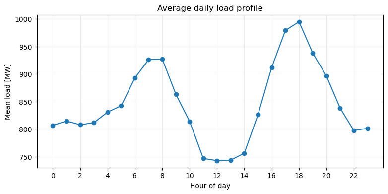
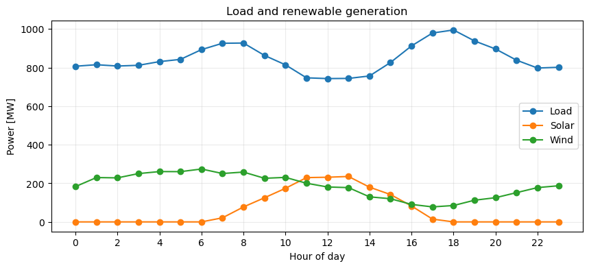
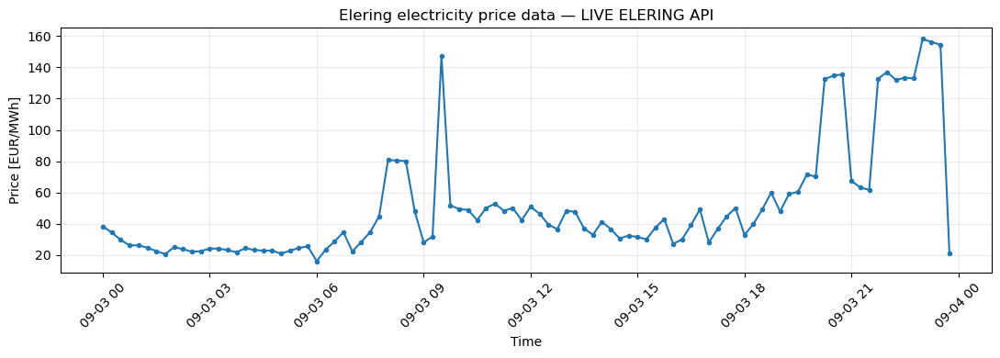

⚡ LAB: Intro to Python, Pandas and Elering LIVE#
Modern power systems are also data systems. In this practical we follow one simple chain:
measurement → Python → DataFrame → information → decision
We first use a small Smart Grid dataset, then connect the same ideas to real Estonian energy data from Elering LIVE.
Learning outcomes#
By the end you should be able to:
use simple Python variables, lists and calculations;
explain
DataFrameandSeries;inspect rows, columns and data types;
select columns and filter rows;
calculate new variables;
work with timestamps and
groupby();identify missing data;
retrieve public price data from Elering;
use an LLM as an analytical assistant without treating its answer as evidence.
Working rule#
🤔 THINK → 🐼 TEST → 🤖 ASK → 🧠 JUDGE
0. Elering LIVE: energy data in the real world#
Open https://dashboard.elering.ee/
Elering is the Estonian transmission system operator. Its public dashboard is a useful example of the Smart Grid logic from Lecture 2:
SENSE → COMMUNICATE → DECIDE → ACT
Pair discussion — 5 minutes#
Explore the dashboard and discuss:
What kinds of energy-system variables can you find?
Which look like measurements and which like market information?
What units are used?
Is everything shown at the same time resolution?
Which variables would help answer: Is demand high? Is electricity expensive? Is the system operating normally?
Do not worry if you do not understand every variable yet. Focus on the question: what can data tell us about an energy system?
1. Python in 10 minutes#
A Python variable stores a value.
load_MW = 62.4
solar_MW = 14.2
wind_MW = 11.7
print(load_MW)
62.4
renewable_MW = solar_MW + wind_MW
net_load_MW = load_MW - renewable_MW
print("Renewable generation:", renewable_MW, "MW")
print("Net load:", net_load_MW, "MW")
Renewable generation: 25.9 MW
Net load: 36.5 MW
🐼 Your turn#
Create renewable_share = renewable_MW / load_MW and print it as a percentage.
# YOUR CODE HERE
Lists#
A single value is useful, but energy systems produce many measurements.
loads = [42.1, 45.3, 51.8, 63.2, 58.7]
print(loads)
print("Number of measurements:", len(loads))
print("Maximum:", max(loads))
print("Minimum:", min(loads))
[42.1, 45.3, 51.8, 63.2, 58.7]
Number of measurements: 5
Maximum: 63.2
Minimum: 42.1
A list works for five values. What if we have thousands of meters, prices, weather and sensor data every 15 minutes? This is where tabular data structures become useful.
2. Meet the DataFrame#
A Pandas DataFrame is a two-dimensional table:
row = one observation;
column = one variable;
DataFrame = many observations and variables together.
import pandas as pd
import numpy as np
import matplotlib.pyplot as plt
example = pd.DataFrame({
"hour": [8, 9, 10, 11],
"load_MW": [55.2, 58.1, 52.6, 49.8],
"solar_MW": [2.1, 5.3, 9.8, 14.5],
})
example
| hour | load_MW | solar_MW | |
|---|---|---|---|
| 0 | 8 | 55.2 | 2.1 |
| 1 | 9 | 58.1 | 5.3 |
| 2 | 10 | 52.6 | 9.8 |
| 3 | 11 | 49.8 | 14.5 |
example["load_MW"]
0 55.2
1 58.1
2 52.6
3 49.8
Name: load_MW, dtype: float64
example[["hour", "load_MW"]]
| hour | load_MW | |
|---|---|---|
| 0 | 8 | 55.2 |
| 1 | 9 | 58.1 |
| 2 | 10 | 52.6 |
| 3 | 11 | 49.8 |
print(type(example["load_MW"]))
print(type(example[["load_MW"]]))
<class 'pandas.core.series.Series'>
<class 'pandas.core.frame.DataFrame'>
A single selected column is usually a Pandas Series. A table containing one or more columns is a DataFrame.
3. Our Smart Grid dataset#
We create two days of 15-minute synthetic measurements. The variables are timestamp, load_MW, solar_MW, wind_MW, price_EUR_MWh, frequency_Hz, and temperature_C.
rng = np.random.default_rng(7)
timestamps = pd.date_range("2026-02-09 00:00", periods=2*24*4, freq="15min")
n = len(timestamps)
hour = timestamps.hour.to_numpy() + timestamps.minute.to_numpy()/60
temperature = -3 + 4*np.sin(2*np.pi*(hour-8)/24) + rng.normal(0,0.6,n)
morning_peak = 180*np.exp(-0.5*((hour-8)/1.8)**2)
evening_peak = 260*np.exp(-0.5*((hour-18)/2.0)**2)
load = 720 + morning_peak + evening_peak + np.clip(-temperature,0,None)*12 + rng.normal(0,18,n)
solar_shape = 330*np.exp(-0.5*((hour-12.5)/2.6)**2)
daylight = ((hour>=7.5)&(hour<=17.0)).astype(float)
solar = solar_shape*daylight*np.clip(rng.normal(0.78,0.10,n),0.35,1.0)
wind = 190 + 75*np.sin(np.linspace(0,4*np.pi,n)) + rng.normal(0,28,n)
wind = np.clip(wind,20,None)
wind_drop = (timestamps >= "2026-02-10 16:30") & (timestamps <= "2026-02-10 19:00")
wind[wind_drop] *= 0.30
net_for_price = load - solar - wind
price = 35 + 0.10*np.clip(net_for_price,0,None) + rng.normal(0,5,n)
price[timestamps == pd.Timestamp("2026-02-10 18:00")] += 110
frequency = 50 + rng.normal(0,0.018,n)
freq_event = (timestamps >= "2026-02-10 18:00") & (timestamps <= "2026-02-10 18:30")
frequency[freq_event] -= 0.10
df = pd.DataFrame({
"timestamp": timestamps,
"load_MW": load.round(1),
"solar_MW": solar.round(1),
"wind_MW": wind.round(1),
"price_EUR_MWh": price.round(2),
"frequency_Hz": frequency.round(3),
"temperature_C": temperature.round(1),
})
df.loc[[17,18], "wind_MW"] = np.nan
df.loc[[103], "temperature_C"] = np.nan
df.head()
| timestamp | load_MW | solar_MW | wind_MW | price_EUR_MWh | frequency_Hz | temperature_C | |
|---|---|---|---|---|---|---|---|
| 0 | 2026-02-09 00:00:00 | 815.0 | 0.0 | 153.7 | 108.90 | 50.033 | -6.5 |
| 1 | 2026-02-09 00:15:00 | 794.4 | 0.0 | 177.2 | 93.33 | 50.031 | -6.4 |
| 2 | 2026-02-09 00:30:00 | 812.1 | 0.0 | 235.5 | 93.08 | 49.965 | -6.9 |
| 3 | 2026-02-09 00:45:00 | 822.0 | 0.0 | 194.3 | 95.17 | 49.983 | -7.3 |
| 4 | 2026-02-09 01:00:00 | 820.7 | 0.0 | 217.1 | 102.81 | 50.012 | -7.1 |
4. First inspection#
Before analysing data, ask: what exactly do I have?
df.head()
| timestamp | load_MW | solar_MW | wind_MW | price_EUR_MWh | frequency_Hz | temperature_C | |
|---|---|---|---|---|---|---|---|
| 0 | 2026-02-09 00:00:00 | 815.0 | 0.0 | 153.7 | 108.90 | 50.033 | -6.5 |
| 1 | 2026-02-09 00:15:00 | 794.4 | 0.0 | 177.2 | 93.33 | 50.031 | -6.4 |
| 2 | 2026-02-09 00:30:00 | 812.1 | 0.0 | 235.5 | 93.08 | 49.965 | -6.9 |
| 3 | 2026-02-09 00:45:00 | 822.0 | 0.0 | 194.3 | 95.17 | 49.983 | -7.3 |
| 4 | 2026-02-09 01:00:00 | 820.7 | 0.0 | 217.1 | 102.81 | 50.012 | -7.1 |
df.shape
(192, 7)
df.columns
Index(['timestamp', 'load_MW', 'solar_MW', 'wind_MW', 'price_EUR_MWh',
'frequency_Hz', 'temperature_C'],
dtype='object')
df.dtypes
timestamp datetime64[ns]
load_MW float64
solar_MW float64
wind_MW float64
price_EUR_MWh float64
frequency_Hz float64
temperature_C float64
dtype: object
df.info()
<class 'pandas.core.frame.DataFrame'>
RangeIndex: 192 entries, 0 to 191
Data columns (total 7 columns):
# Column Non-Null Count Dtype
--- ------ -------------- -----
0 timestamp 192 non-null datetime64[ns]
1 load_MW 192 non-null float64
2 solar_MW 192 non-null float64
3 wind_MW 190 non-null float64
4 price_EUR_MWh 192 non-null float64
5 frequency_Hz 192 non-null float64
6 temperature_C 191 non-null float64
dtypes: datetime64[ns](1), float64(6)
memory usage: 10.6 KB
🐼 Your turn#
Answer: How many rows and columns? Which column contains time? Which are numerical? Does every column have the same number of non-missing values?
5. Descriptive statistics#
df.describe().T.round(2)
| count | mean | min | 25% | 50% | 75% | max | std | |
|---|---|---|---|---|---|---|---|---|
| timestamp | 192 | 2026-02-09 23:52:30 | 2026-02-09 00:00:00 | 2026-02-09 11:56:15 | 2026-02-09 23:52:30 | 2026-02-10 11:48:45 | 2026-02-10 23:45:00 | NaN |
| load_MW | 192.0 | 846.267188 | 708.7 | 795.625 | 831.2 | 900.175 | 1025.9 | 74.132742 |
| solar_MW | 192.0 | 63.023438 | 0.0 | 0.0 | 0.0 | 129.075 | 274.9 | 87.518253 |
| wind_MW | 190.0 | 185.410526 | 20.4 | 133.9 | 192.9 | 236.8 | 335.9 | 67.50366 |
| price_EUR_MWh | 192.0 | 95.288958 | 56.91 | 85.995 | 94.99 | 104.15 | 238.33 | 19.462509 |
| frequency_Hz | 192.0 | 49.997615 | 49.887 | 49.986 | 49.999 | 50.012 | 50.045 | 0.022681 |
| temperature_C | 191.0 | -3.084817 | -8.0 | -5.9 | -3.3 | -0.3 | 1.8 | 2.917701 |
print("Mean load:", df["load_MW"].mean(), "MW")
print("Maximum load:", df["load_MW"].max(), "MW")
print("Minimum frequency:", df["frequency_Hz"].min(), "Hz")
print("Maximum price:", df["price_EUR_MWh"].max(), "EUR/MWh")
Mean load: 846.2671875000001 MW
Maximum load: 1025.9 MW
Minimum frequency: 49.887 Hz
Maximum price: 238.33 EUR/MWh
🐼 Your turn#
Find mean solar generation, maximum wind generation, and minimum electricity price using .mean(), .max(), .min().
# YOUR CODE HERE
6. Selecting data#
df["load_MW"].head()
0 815.0
1 794.4
2 812.1
3 822.0
4 820.7
Name: load_MW, dtype: float64
df[["timestamp", "load_MW", "price_EUR_MWh"]].head()
| timestamp | load_MW | price_EUR_MWh | |
|---|---|---|---|
| 0 | 2026-02-09 00:00:00 | 815.0 | 108.90 |
| 1 | 2026-02-09 00:15:00 | 794.4 | 93.33 |
| 2 | 2026-02-09 00:30:00 | 812.1 | 93.08 |
| 3 | 2026-02-09 00:45:00 | 822.0 | 95.17 |
| 4 | 2026-02-09 01:00:00 | 820.7 | 102.81 |
🐼 Your turn#
Create renewable_view with only timestamp, solar_MW, wind_MW, then show the first 10 rows.
# YOUR CODE HERE
7. Filtering: find important moments#
Filtering asks: which rows satisfy a condition?
high_load = df[df["load_MW"] > 1000]
high_load.head()
| timestamp | load_MW | solar_MW | wind_MW | price_EUR_MWh | frequency_Hz | temperature_C | |
|---|---|---|---|---|---|---|---|
| 71 | 2026-02-09 17:45:00 | 1005.5 | 0.0 | 101.8 | 114.88 | 49.994 | -2.0 |
| 73 | 2026-02-09 18:15:00 | 1002.6 | 0.0 | 108.6 | 122.34 | 50.010 | -1.3 |
| 168 | 2026-02-10 18:00:00 | 1001.2 | 0.0 | 50.0 | 238.33 | 49.888 | -1.0 |
| 169 | 2026-02-10 18:15:00 | 1025.9 | 0.0 | 51.3 | 137.12 | 49.903 | -1.2 |
| 170 | 2026-02-10 18:30:00 | 1005.7 | 0.0 | 46.0 | 136.93 | 49.887 | -1.9 |
low_frequency = df[df["frequency_Hz"] < 49.95]
low_frequency[["timestamp", "frequency_Hz", "load_MW", "price_EUR_MWh"]]
| timestamp | frequency_Hz | load_MW | price_EUR_MWh | |
|---|---|---|---|---|
| 168 | 2026-02-10 18:00:00 | 49.888 | 1001.2 | 238.33 |
| 169 | 2026-02-10 18:15:00 | 49.903 | 1025.9 | 137.12 |
| 170 | 2026-02-10 18:30:00 | 49.887 | 1005.7 | 136.93 |
stress = df[(df["load_MW"] > 950) & (df["wind_MW"] < 120)]
stress[["timestamp", "load_MW", "wind_MW", "price_EUR_MWh"]]
| timestamp | load_MW | wind_MW | price_EUR_MWh | |
|---|---|---|---|---|
| 71 | 2026-02-09 17:45:00 | 1005.5 | 101.8 | 114.88 |
| 73 | 2026-02-09 18:15:00 | 1002.6 | 108.6 | 122.34 |
| 75 | 2026-02-09 18:45:00 | 997.6 | 91.3 | 124.70 |
| 76 | 2026-02-09 19:00:00 | 952.5 | 94.2 | 111.96 |
| 165 | 2026-02-10 17:15:00 | 970.5 | 29.6 | 135.40 |
| 166 | 2026-02-10 17:30:00 | 995.2 | 20.4 | 131.99 |
| 167 | 2026-02-10 17:45:00 | 980.5 | 34.3 | 123.12 |
| 168 | 2026-02-10 18:00:00 | 1001.2 | 50.0 | 238.33 |
| 169 | 2026-02-10 18:15:00 | 1025.9 | 51.3 | 137.12 |
| 170 | 2026-02-10 18:30:00 | 1005.7 | 46.0 | 136.93 |
| 171 | 2026-02-10 18:45:00 | 980.6 | 41.2 | 126.81 |
🚨 Grid Alert — your turn#
Find rows with price_EUR_MWh > 120. Then find rows with load_MW > 950 and solar_MW < 30. Which condition produces more observations?
# YOUR CODE HERE
8. From measurements to information#
The operator may care about quantities that are not directly measured.
renewable = solar + wind
net_load = load - renewable
df["renewable_MW"] = df["solar_MW"] + df["wind_MW"]
df["net_load_MW"] = df["load_MW"] - df["renewable_MW"]
df["renewable_share_pct"] = 100*df["renewable_MW"]/df["load_MW"]
df[["timestamp","load_MW","renewable_MW","net_load_MW","renewable_share_pct"]].head()
| timestamp | load_MW | renewable_MW | net_load_MW | renewable_share_pct | |
|---|---|---|---|---|---|
| 0 | 2026-02-09 00:00:00 | 815.0 | 153.7 | 661.3 | 18.858896 |
| 1 | 2026-02-09 00:15:00 | 794.4 | 177.2 | 617.2 | 22.306143 |
| 2 | 2026-02-09 00:30:00 | 812.1 | 235.5 | 576.6 | 28.998892 |
| 3 | 2026-02-09 00:45:00 | 822.0 | 194.3 | 627.7 | 23.637470 |
| 4 | 2026-02-09 01:00:00 | 820.7 | 217.1 | 603.6 | 26.453028 |
Discussion#
Which variables are raw measurements and which are derived information? This is a small example of turning measurements into information.
🐼 Your turn#
Use df.nlargest(5, "net_load_MW") to find the five most demanding periods for non-renewable supply.
# YOUR CODE HERE
9. Energy data has time#
The lecture ends with an important idea: energy data is mostly time series.
df["timestamp"].dtype
dtype('<M8[ns]')
df["hour"] = df["timestamp"].dt.hour
df["date"] = df["timestamp"].dt.date
df["day_name"] = df["timestamp"].dt.day_name()
df[["timestamp","hour","date","day_name"]].head()
| timestamp | hour | date | day_name | |
|---|---|---|---|---|
| 0 | 2026-02-09 00:00:00 | 0 | 2026-02-09 | Monday |
| 1 | 2026-02-09 00:15:00 | 0 | 2026-02-09 | Monday |
| 2 | 2026-02-09 00:30:00 | 0 | 2026-02-09 | Monday |
| 3 | 2026-02-09 00:45:00 | 0 | 2026-02-09 | Monday |
| 4 | 2026-02-09 01:00:00 | 1 | 2026-02-09 | Monday |
10. GroupBy: discover a daily pattern#
groupby() means: split observations into groups → calculate something for each group.
hourly_load = df.groupby("hour", as_index=False)["load_MW"].mean()
hourly_load
| hour | load_MW | |
|---|---|---|
| 0 | 0 | 806.7750 |
| 1 | 1 | 814.7500 |
| 2 | 2 | 807.8625 |
| 3 | 3 | 811.6750 |
| 4 | 4 | 830.7750 |
| 5 | 5 | 842.3750 |
| 6 | 6 | 892.9125 |
| 7 | 7 | 925.9125 |
| 8 | 8 | 927.1250 |
| 9 | 9 | 862.9125 |
| 10 | 10 | 814.0750 |
| 11 | 11 | 746.8125 |
| 12 | 12 | 742.8750 |
| 13 | 13 | 743.7000 |
| 14 | 14 | 756.3500 |
| 15 | 15 | 826.2125 |
| 16 | 16 | 912.0625 |
| 17 | 17 | 979.0000 |
| 18 | 18 | 994.8125 |
| 19 | 19 | 937.9875 |
| 20 | 20 | 896.3125 |
| 21 | 21 | 838.2750 |
| 22 | 22 | 797.4875 |
| 23 | 23 | 801.3750 |
plt.figure(figsize=(9,4))
plt.plot(hourly_load["hour"], hourly_load["load_MW"], marker="o")
plt.xlabel("Hour of day")
plt.ylabel("Mean load [MW]")
plt.title("Average daily load profile")
plt.xticks(range(0,24,2))
plt.grid(alpha=0.25)
plt.show()

🤔 THINK → 🐼 TEST#
Do you expect one daily peak or two? At what hours? Then use the DataFrame to identify the hour with the highest mean load.
# YOUR CODE HERE
hourly_energy = df.groupby("hour", as_index=False)[["load_MW","solar_MW","wind_MW"]].mean()
plt.figure(figsize=(10,4))
plt.plot(hourly_energy["hour"], hourly_energy["load_MW"], marker="o", label="Load")
plt.plot(hourly_energy["hour"], hourly_energy["solar_MW"], marker="o", label="Solar")
plt.plot(hourly_energy["hour"], hourly_energy["wind_MW"], marker="o", label="Wind")
plt.xlabel("Hour of day")
plt.ylabel("Power [MW]")
plt.title("Load and renewable generation")
plt.legend()
plt.xticks(range(0,24,2))
plt.grid(alpha=0.25)
plt.show()

Discussion#
Does renewable generation peak at the same time as demand? How does this connect to peak demand and renewable volatility from the lecture?
11. Missing data#
Real sensors and communication systems do not always produce perfect datasets.
df.isna().sum()
timestamp 0
load_MW 0
solar_MW 0
wind_MW 2
price_EUR_MWh 0
frequency_Hz 0
temperature_C 1
renewable_MW 2
net_load_MW 2
renewable_share_pct 2
hour 0
date 0
day_name 0
dtype: int64
df[df["wind_MW"].isna()]
| timestamp | load_MW | solar_MW | wind_MW | price_EUR_MWh | frequency_Hz | temperature_C | renewable_MW | net_load_MW | renewable_share_pct | hour | date | day_name | |
|---|---|---|---|---|---|---|---|---|---|---|---|---|---|
| 17 | 2026-02-09 04:15:00 | 801.5 | 0.0 | NaN | 76.97 | 49.984 | -6.6 | NaN | NaN | NaN | 4 | 2026-02-09 | Monday |
| 18 | 2026-02-09 04:30:00 | 834.7 | 0.0 | NaN | 89.04 | 50.007 | -7.3 | NaN | NaN | NaN | 4 | 2026-02-09 | Monday |
Discussion#
Why could a measurement be missing? Think about sensor problems, communication failures, maintenance, database issues and processing errors. Today we only detect missing data; later we will learn how to handle it.
12. LLM checkpoint — interpretation is not evidence#
summary_for_llm = df[["load_MW","solar_MW","wind_MW","price_EUR_MWh","frequency_Hz"]].describe().round(2)
summary_for_llm
| load_MW | solar_MW | wind_MW | price_EUR_MWh | frequency_Hz | |
|---|---|---|---|---|---|
| count | 192.00 | 192.00 | 190.00 | 192.00 | 192.00 |
| mean | 846.27 | 63.02 | 185.41 | 95.29 | 50.00 |
| std | 74.13 | 87.52 | 67.50 | 19.46 | 0.02 |
| min | 708.70 | 0.00 | 20.40 | 56.91 | 49.89 |
| 25% | 795.62 | 0.00 | 133.90 | 86.00 | 49.99 |
| 50% | 831.20 | 0.00 | 192.90 | 94.99 | 50.00 |
| 75% | 900.18 | 129.07 | 236.80 | 104.15 | 50.01 |
| max | 1025.90 | 274.90 | 335.90 | 238.33 | 50.04 |
Copy the table into an LLM and ask:
You are assisting a junior energy analyst.
I will provide summary statistics from a power-system dataset.
1. Give three observations directly supported by the table.
2. Give three hypotheses that require further testing.
3. Do not invent events or causal explanations.
4. Clearly label OBSERVATION and HYPOTHESIS.
🧠 JUDGE#
Did the LLM infer temporal patterns from statistics that contain no time information? Did it confuse coincidence with cause? LLM output is a hypothesis until checked against data.
13. Real data: Elering public API#
Now we move from synthetic data to a real public source. Elering Dashboard provides a public Nord Pool price endpoint for the Estonian price area.
The code below requests the last complete local day in Estonia, converts JSON into a DataFrame, and analyses it. No API key is required for this price endpoint.
Internet access is required. If the request fails, the notebook creates fallback data so the Pandas exercise still works.
import requests
local_start = pd.Timestamp.now(tz="Europe/Tallinn").normalize() - pd.Timedelta(days=1)
local_end = local_start + pd.Timedelta(days=1)
start_utc = local_start.tz_convert("UTC")
end_utc = local_end.tz_convert("UTC") - pd.Timedelta(milliseconds=1)
def iso_z(ts):
return ts.strftime("%Y-%m-%dT%H:%M:%S.000Z")
url = "https://dashboard.elering.ee/api/nps/price"
params = {"start": iso_z(start_utc), "end": iso_z(end_utc)}
print("Local date:", local_start.date())
print("UTC window:", params["start"], "→", params["end"])
Local date: 2026-09-03
UTC window: 2026-09-02T21:00:00.000Z → 2026-09-03T20:59:59.000Z
try:
response = requests.get(url, params=params, timeout=20)
response.raise_for_status()
payload = response.json()
records = payload["data"]["ee"]
elering = pd.DataFrame(records)
elering["timestamp"] = pd.to_datetime(elering["timestamp"], unit="s", utc=True).dt.tz_convert("Europe/Tallinn")
elering = elering[["timestamp","price"]].rename(columns={"price":"price_EUR_MWh"})
DATA_SOURCE = "LIVE ELERING API"
except Exception as exc:
print("Live API request failed:", exc)
print("Using fallback data.")
fallback_time = pd.date_range("2026-08-19 00:00", periods=24*4, freq="15min", tz="Europe/Tallinn")
h = fallback_time.hour.to_numpy() + fallback_time.minute.to_numpy()/60
fallback_price = 55 + 20*np.sin(2*np.pi*(h-7)/24) + 45*np.exp(-0.5*((h-20)/2.0)**2)
elering = pd.DataFrame({"timestamp":fallback_time, "price_EUR_MWh":fallback_price.round(2)})
DATA_SOURCE = "FALLBACK DATA"
print("Data source:", DATA_SOURCE)
elering.head()
Data source: LIVE ELERING API
| timestamp | price_EUR_MWh | |
|---|---|---|
| 0 | 2026-09-03 00:00:00+03:00 | 38.26 |
| 1 | 2026-09-03 00:15:00+03:00 | 34.36 |
| 2 | 2026-09-03 00:30:00+03:00 | 29.63 |
| 3 | 2026-09-03 00:45:00+03:00 | 26.08 |
| 4 | 2026-09-03 01:00:00+03:00 | 26.15 |
Inspect the real DataFrame#
print("Shape:", elering.shape)
print(elering.dtypes)
display(elering.describe().T.round(2))
Shape: (96, 2)
timestamp datetime64[ns, Europe/Tallinn]
price_EUR_MWh float64
dtype: object
| count | mean | std | min | 25% | 50% | 75% | max | |
|---|---|---|---|---|---|---|---|---|
| price_EUR_MWh | 96.0 | 51.33 | 37.05 | 16.0 | 26.13 | 38.66 | 51.97 | 158.19 |
Do not assume the sampling interval#
Different energy datasets have different sampling rates. Let the data tell us the interval.
time_differences = elering["timestamp"].sort_values().diff().dropna()
print(time_differences.value_counts().head())
timestamp
0 days 00:15:00 95
Name: count, dtype: int64
🐼 Your turn — real Elering data#
Use Pandas to find: minimum price, maximum price, mean price, timestamp of the maximum, and number of observations above 100 EUR/MWh.
# YOUR CODE HERE
plt.figure(figsize=(11,4))
plt.plot(elering["timestamp"], elering["price_EUR_MWh"], marker=".")
plt.xlabel("Time")
plt.ylabel("Price [EUR/MWh]")
plt.title(f"Elering electricity price data — {DATA_SOURCE}")
plt.grid(alpha=0.25)
plt.xticks(rotation=45)
plt.tight_layout()
plt.show()

14. A tiny Demand Response question#
Imagine an EV needs 1 hour of charging. If the price data use 15-minute intervals, one hour corresponds to four observations. Find the four cheapest observations:
cheapest = elering.nsmallest(4, "price_EUR_MWh")
cheapest
| timestamp | price_EUR_MWh | |
|---|---|---|
| 24 | 2026-09-03 06:00:00+03:00 | 16.00 |
| 7 | 2026-09-03 01:45:00+03:00 | 20.56 |
| 20 | 2026-09-03 05:00:00+03:00 | 20.81 |
| 95 | 2026-09-03 23:45:00+03:00 | 21.12 |
Discussion#
Is selecting the four individually cheapest intervals necessarily a good charging schedule? What else do we need to know: consecutive intervals, EV connection time, charging power, departure time, user preference? This is the difference between finding information and making an operational decision.
15. Final challenge — SENSE → DECIDE → ACT#
Work in pairs. Identify one period in the synthetic dataset that deserves attention.
SENSE#
Find a period with high demand, low renewable generation, high price, or unusual frequency.
DECIDE#
Calculate at least two numerical indicators and create one useful plot or filtered table.
ASK#
Ask an LLM:
You are assisting a power-system operator.
Here are the measurements and indicators I selected:
[paste evidence]
Suggest two possible actions. For each action explain why it may help, list assumptions, and state what additional data are needed. Do not claim that an action is optimal or safe without further validation.
JUDGE#
Which recommendation is actually supported by your data?
ACT#
Prepare a 60-second briefing: We observed … The evidence is … We recommend investigating/considering … Before acting, we still need …
# YOUR ANALYSIS HERE
16. Reflection#
Python & Pandas#
What is a variable?
What is a list?
What is a DataFrame?
What is the difference between a row and a column?
What does filtering do?
What does
groupby()do?
Energy Informatics#
Give one example of a measurement and one example of derived information.
Why can renewable variability make operation harder?
Why do missing measurements matter?
Elering#
What did the Elering dashboard show that connects to Lecture 2?
What was the time resolution of the price data you retrieved?
Why should you check time resolution instead of assuming it?
LLM#
What was the LLM useful for?
What still had to be verified with data?